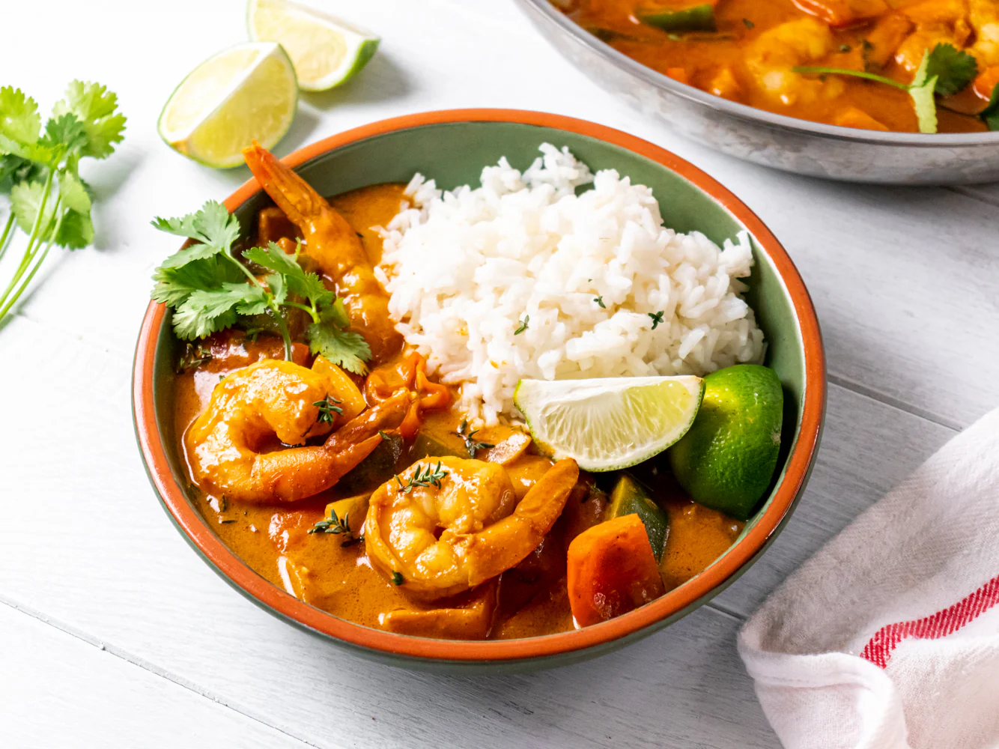

Shrimp Curry

This curry recipe is a subtle yet richly flavored curry that complements prawns perfectly. It tastes wonderful and is a very easy meal to prepare when you are in a hurry. Make sure to remove the shrimp tails before adding them to the skillet. Serve with rice.
Ingrediants:
- 2 tablespoons peanut oil
- ½ sweet onion, minced
- 2 cloves garlic, chopped
- 1½ teaspoons ground turmeric
- 1 teaspoon ground ginger
- 1 teaspoon ground cumin
- 1 teaspoon paprika
- ½ teaspoon red chili powder
- 1 (14.5 ounce) can chopped tomatoes
- 1 (14 ounce) can coconut milk
- 1 teaspoon salt
- 1 pound cooked and peeled shrimp
- 2 tablespoons chopped fresh cilantro
Steps:
- Gather all ingredients.
- Heat peanut oil in a large skillet over medium heat; cook and stir onion in hot oil until translucent, about 5 minutes. Remove the skillet from heat and allow to cool slightly, about 2 minutes.
- Add garlic, turmeric, ginger, cumin, paprika, and chile powder to onion in the skillet; stir over low heat to bloom spices, about 30 seconds. Stir in tomatoes, coconut milk, and salt. Bring to a boil for 1 minute, then reduce heat and simmer, stirring occasionally, for 10 minutes.
- Stir in shrimp and cilantro; simmer until shrimp is warmed through, about 1 minute.
- Serve and enjoy!
Home